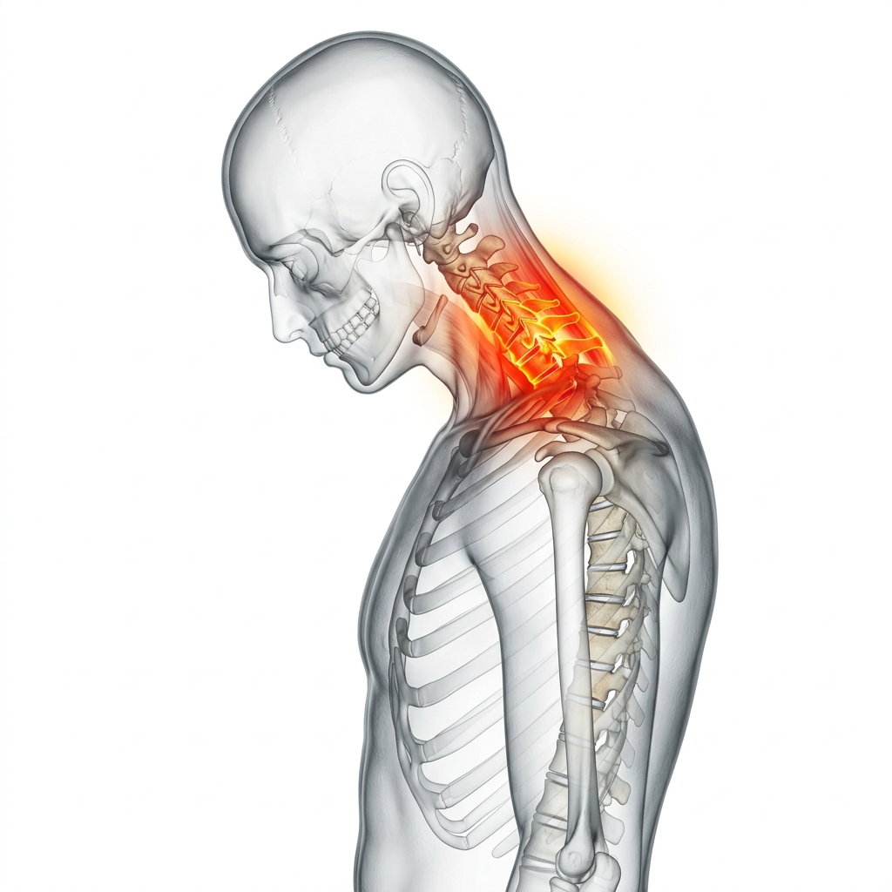

Thoracic Spine Clinic
등 깊은 곳에서 오는 통증,
흉추 구조의 불균형에 있습니다.
단순한 피로나 스트레스가 아닙니다.
삼성365의원의 정밀 진단으로 통증의 시작점을 찾아 기능적 리셋(Reset)을 시작합니다.
지나치기 쉬운 등통증의 경고 신호
일상을 조금씩 무너뜨리는 등통증의 위험 증상들을 체크해 보세요.
날개뼈 안쪽의 깊은 결림
양 날개뼈 사이의 흉추 주변 근육이 굳어 식사나 호흡 시에도 불편함이 동반됩니다.
장시간 앉아 있을 때 심해지는 압박감
앉아 있는 자세가 길어질수록 등 중간에 묵직하게 눌리는 듯한 압박과 통증이 증가합니다.
호흡할 때 늑골 주변부 통증
흉추에서 갈비뼈로 이어지는 신경이 눌려 심호흡이나 기침 시 날카로운 통증이 느껴집니다.

Medical Insight : 흉추 불균형의 이해
굽은 등은 단순한
자세 문제가 아닙니다.
장시간 앉아 있는 현대인에게 흉추의 과도한 만곡(굽은 등, 척추후만증)은 매우 흔하게 나타납니다. 이는 주변 근육의 비대칭적 긴장을 유발하고, 늑골과 연결된 신경을 자극하여 만성적인 등통증과 호흡 불쾌감의 원인이 됩니다.
핵심 타겟 : 흉추 주변 심부 근육과 후관절 기능 회복
흉추의 가동 범위를 회복하고, 굳어진 늑횡관절을 풀어주는 것이 핵심입니다. 등 깊은 곳의 회선근 등 심부 안정화 근육의 기능을 되살려야 재발 없는 치료가 가능합니다.
방치할수록 복잡해지는 회복 과정
치료 시기를 놓치지 않는 것이 만성화를 막는 가장 빠른 길입니다.
1단계: 근막 긴장기
흉추 주변 근육이 만성적으로 긴장하며 날개뼈 안쪽의 뻐근함과 만성 피로감이 시작됨
2단계: 구조적 변형기
내원 환자가 가장 많은 단계
흉추 만곡이 악화되며 후관절 압박이 심화되고, 늑골 신경을 건드리는 방사통이 발생함
3단계: 구조적 불안정기
구조적 불안정기로 인한 만성 통증과 호흡 시 불편감이 심화됨
Targeted Solution
삼성365의원 등통증 특화 3R Therapy
흉추의 가동성을 회복하고, 굳어버린 심부 조직의 긴장을 해소합니다.
01
Release 이완
굳어진 흉추 주변 심부 근육(회선근, 반극근)과 늑횡관절의 유착 부위를 미세바늘로 정밀 이완합니다.
02
Reinforcement 강화
약화된 흉추 지지 인대 및 주변 조직의 자생력을 높여 올바른 척추 배열을 유지하도록 강화합니다.
03
Reset 리셋
잘못 각인된 자세 패턴과 신경계 통증 신호를 정상화하여 건강한 흉추 밸런스로의 회복을 돕습니다.

"등통증은 목과 허리를 연결하는 흉추의 불균형에서 시작됩니다. 단순히 아픈 곳만 치료하는 것이 아니라, 척추 전체의 균형을 되찾아 드리는 것이 저의 목표입니다."
삼성365의원 대표원장
전 삼성의료원 전문의
자주 묻는 질문
Q. 등통증과 심장 또는 내장 질환은 어떻게 구별하나요? ↓
내장 질환으로 인한 통증은 대개 자세 변화와 무관하게 지속되며, 식사나 소화와 연관된 경향이 있습니다. 반면 흉추성 등통증은 특정 자세나 움직임에 따라 통증이 변화합니다. 정확한 감별을 위해서는 전문의의 진단이 필요합니다.
Q. 굽은 등(척추후만증)도 치료가 가능한가요? ↓
초·중기의 기능성 척추후만증은 심부 근육 이완과 자세 교정 치료를 통해 충분히 개선이 가능합니다. 뼈의 구조적 변형이 고착화된 경우에도 통증 감소 및 기능 회복에 큰 도움이 됩니다.
Q. 치료 후 일상생활 복귀는 언제 가능한가요? ↓
대부분의 치료는 당일 일상 복귀가 가능한 비수술적 방법으로 진행됩니다. 치료 직후 일시적인 시술 부위 뻐근함이 있을 수 있으나, 이는 1~2일 이내에 자연스럽게 소실됩니다.